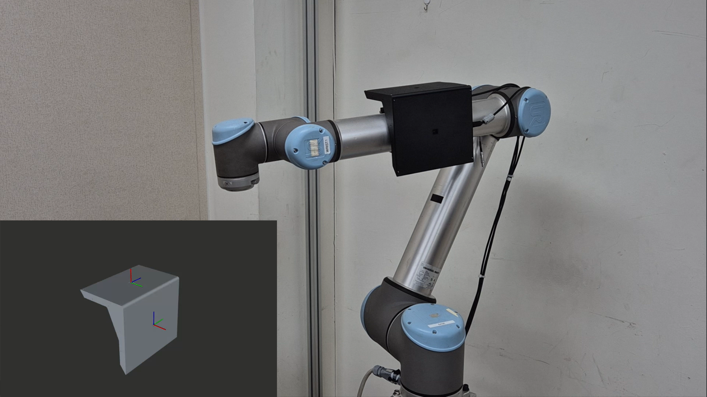
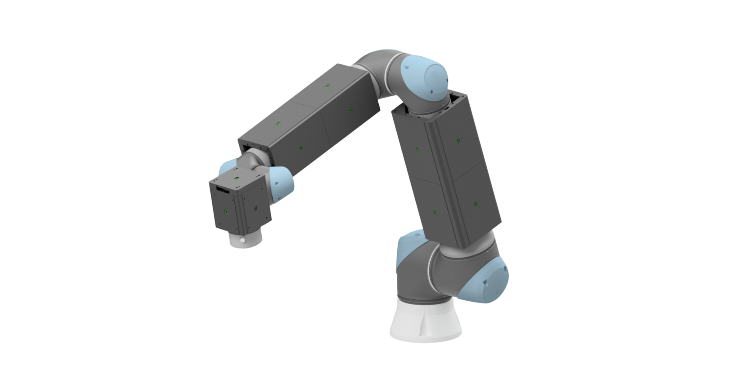
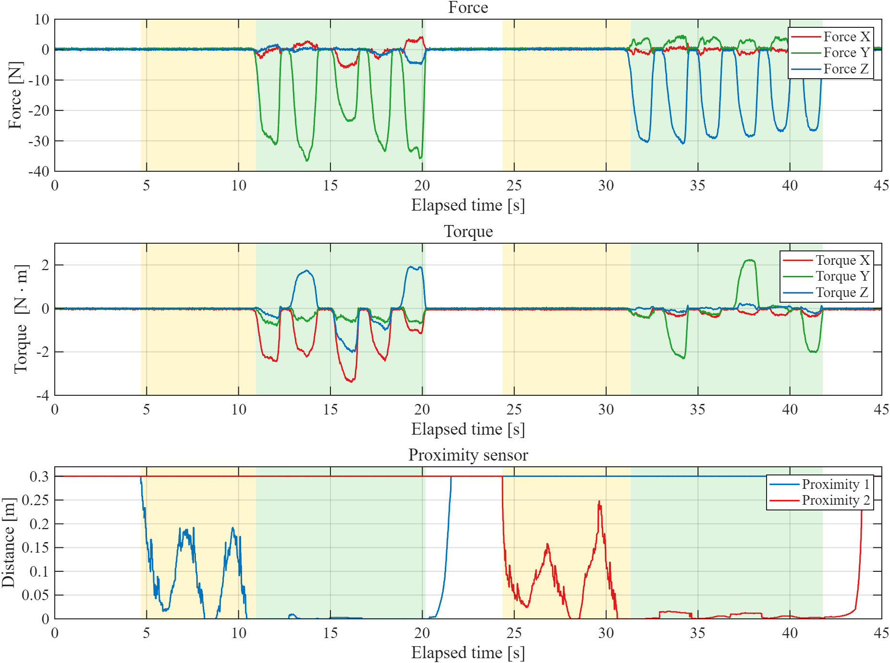

상황에 따라 달라지는 안전 반응
접촉 전에는 피하고, 접촉한 뒤에는 힘을 받아들이는 서로 다른 제어가 필요합니다.
ONGOING RESEARCH · 2026—PRESENT
Proximity Sensing · RMPflow · Compliance Control
닿기 전에는 근접센서로 안전거리를 확보하고, 접촉이 발생하면 F/T 센서를 통해 부드럽게 순응하는 제어를 연구하고 있습니다. 두 반응을 RMPflow 안에서 자연스럽게 전환하는 것이 목표입니다.

Project at a Glance
인간과 가까이 작업하는 로봇에는 접촉 전 회피와 접촉 후 순응이 모두 필요합니다. 현재는 두 상태를 하나의 RMPflow 제어기에서 연결하고 있습니다.
접촉 전에는 피하고, 접촉한 뒤에는 힘을 받아들이는 서로 다른 제어가 필요합니다.
Proximity는 Collision RMP에, F/T 신호는 Contact RMP에 연결해 각 상태에 필요한 반응을 만듭니다.
센서 모듈 구성과 신호 특성을 확인하며, 회피에서 순응으로 이어지는 전환 로직을 개발하고 있습니다.
Control System
목표를 향한 진행, 접촉 전 회피, 접촉 후 순응을 각각의 RMP로 구성하고, RMPflow가 현재 상태에 맞는 로봇 동작으로 결합하도록 설계하고 있습니다.
작업 목표를 향한 진행
접촉 전 비접촉 회피
접촉 후 힘에 따른 순응
사람·장애물 접근
근접거리 기반 회피
접촉력 감지
접촉 방향으로 순응
Current Progress
로봇에 근접센서와 F/T 센서를 통합한 모듈을 구성하고, 접근과 접촉 과정에서 각 신호가 어떻게 변하는지 확인하고 있습니다.


위 신호는 센서 특성과 통합 조건을 확인하기 위한 예비 기록입니다. 회피–순응 전환 제어의 최종 성능 결과를 의미하지 않습니다.
Next Steps
센서 신호의 재현성을 먼저 높이고, 근접거리와 접촉력을 RMPflow에 함께 연결해 회피와 순응 사이의 전환을 구현할 계획입니다.
Ongoing research direction